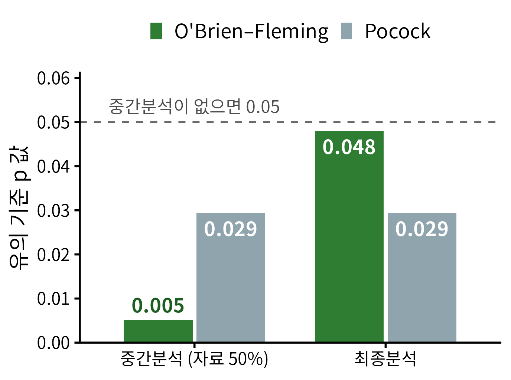
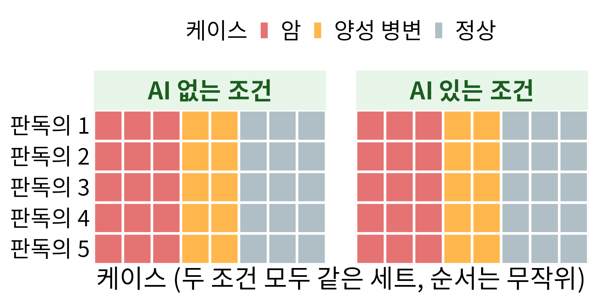
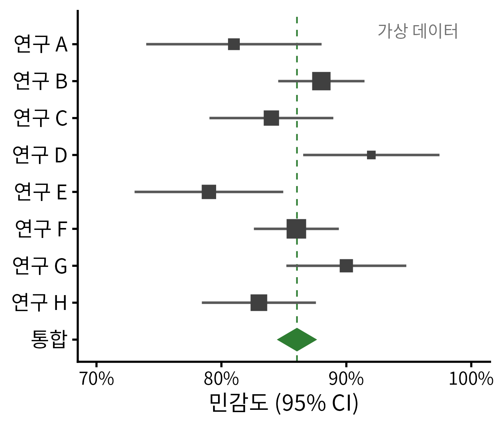
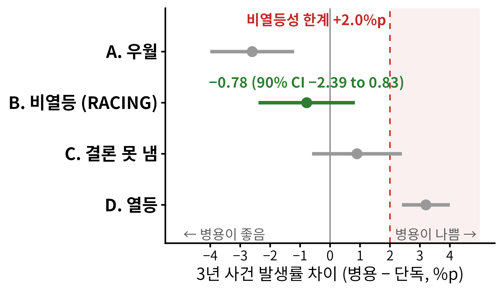
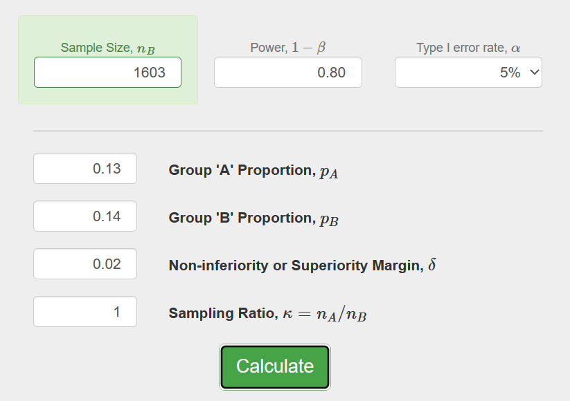
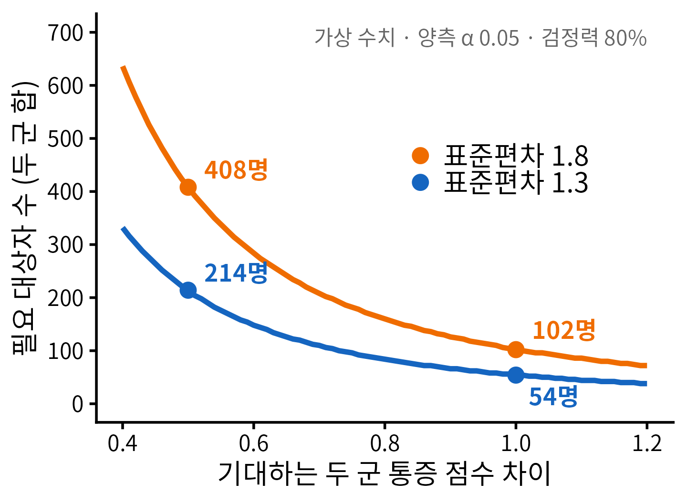
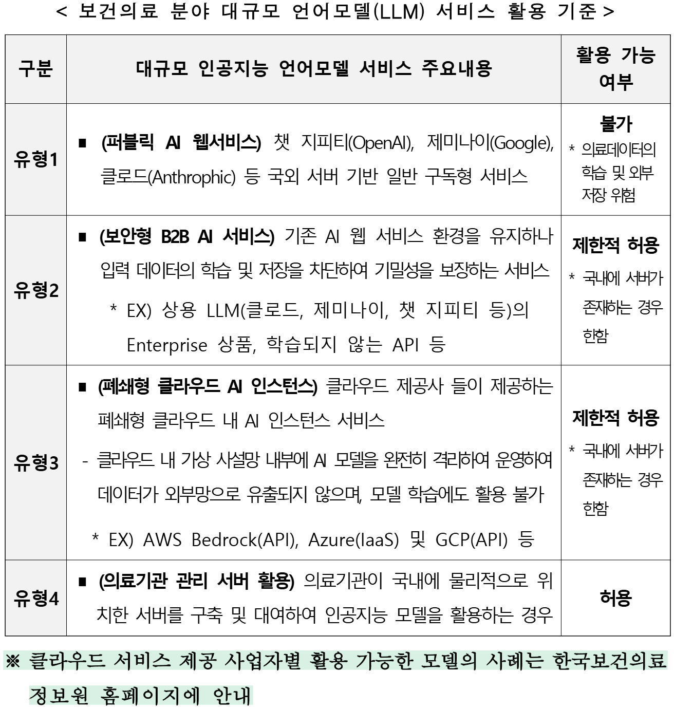
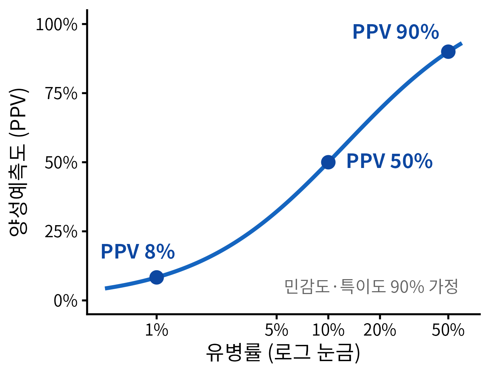
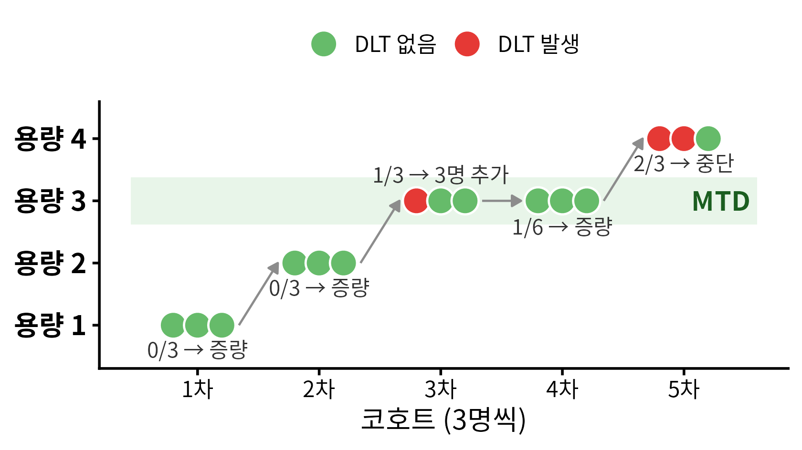

질문: 내가 만든 AI 기기는 어떻게 환자에게 쓰일 수 있을까?
오늘 순서: 규제 틀 (1–3, 5–6단계) → 임상시험 (4단계) → 지원 사례 → 허가 이후 (7단계)
식약처 고시 「의료기기 품목 및 품목별 등급에 관한 규정」 제2023-41호 (2023.6.12) 기준 · 식약처 「의료기기와 개인용 건강관리 (웰니스) 제품 판단기준」
먼저 의료기기인지 확인: 질병의 진단·치료·예방 목적이면 의료기기,
일상 건강관리용 저위험 제품은 웰니스일 수 있음
의료기기면 위해도 (사용목적·침습성·접촉 기간)로 등급 결정
임상 자료는 이 목록의 일부 · 임상 자료나 새 임상시험이 필요한지는 사용목적·위해도·기존 제품과의 차이, 기존 근거로 판단
등급 분류
품목·위해도
임상시험 승인
필요할 때
식약처 + IRB
탐색 임상
pilot
필요에 따라
확증 임상
pivotal
허가 근거
허가·인증
식약처
진료 도입·급여
기존 기술 확인
필요시 신의료기술 평가
진료 도입·급여 기존 기술인지 확인 → 새 기술이면 신의료기술평가 → 급여 여부 결정
허가 = 팔 수 있다 · 진료 도입과 급여는 따로 확인
디지털의료제품법: 요건을 갖춘 비접촉·저위험 임상은 식약처 승인 대신 실시기관 승인으로 진행 가능
빠른 길도 성능·임상 근거는 필요: 빨라지는 것은 심사 순서와 절차
사람을 대상으로 의약품·의료기기의 안전성과 유효성을 증명하기 위한 시험
무작위배정 임상시험 (RCT)의 기본 구조
결과를 보기 전에 방법을 먼저 정한다: 평가변수, 대상자 수, 분석 방법
회사를 세워 임상시험을 맡기면 여러분이 의뢰자 · 차라투는 통계 담당자: 설계부터 허가 서류까지
김진섭: DSMB 통계 위원 참여
2023~ APS-STROKE 항인지질항체증후군 뇌졸중: 클로피도그렐 기반 항혈소판제 vs 와파린 · 다기관 · NCT05995600
2024~ SVO70 소혈관폐색 뇌졸중의 LDL 목표 (<70 vs 90–110 mg/dL) · 4,016명 · NCT06649240
2026~ 심장내과 RCT 준비 중 · IRB 권고로 통계 위원 참여
위원은 연구와 이해관계가 없어야 함 · 같은 연구의 통계 담당자와 DSMB 통계 위원은 겸하지 않음

중간분석 1회 (자료 50%), 양측 α 0.05 (gsDesign 경계)
1
등록 전 첫 회의: 헌장, 자료 검토 주기와 검토할 자료, 비밀유지 합의
2
무작위배정 검토: 층화 변수가 많으면 층마다 대상자가 너무 적어짐 → 기관 포함 1–2개
3
군별 결과는 DSMB만: 연구자에게는 전체 기저 특성·안전성·탈락만 (전체 결과도 눈가림을 깰 수 있음)
4
효과로 중단을 판단하면 유의수준 조정: 시점과 방법은 계획서·헌장에 미리
O’Brien–Fleming: 중간 p < 0.005일 때만 멈추고, 최종은 p < 0.048로 판정 → 전체 유의수준 0.05 유지
| 항목 | 신약 | 의료기기 |
|---|---|---|
| 단계 | 1·2·3·4상 | 탐색 (pilot) → 확증 (pivotal) |
| 핵심 질문 | 어느 용량에서 얼마나 효과가 있나 | 성능, 사용법, 시술 결과 |
| 첫 대상 | 건강인 (항암제는 환자) | 주로 환자 |
| 눈가림 | 위약 이중눈가림이 흔함 | 수술·시술은 어려움 → 평가자 눈가림 |
| 시술자 영향 | 적음 | 숙련도·학습곡선 |
| 제품 변경 | 성분 고정 (제형·공정 변경은 평가) | 버전 개선이 잦음 |
| 대상자 수 | 3상 수백–수천 명 | 보통 수십–수백 명 |
| 임상 필요 | 신약은 필수 | 등급·동등성에 따라 면제되기도 함 |
식립 정확도: 계획 위치와 실제 위치의 차이 (예시 그림)
| 단계 | 무엇을 보나 |
|---|---|
| 벤치·모형 | 정확도, 반복성, 오작동 |
| 카데바·동물 | 실제 조직에서 정확도·안전 (필요할 때) |
| 탐색 임상 | 소수 환자에서 안전성, 확증 설계에 쓸 가정 |
| 확증 임상 | 미리 정한 1차 평가변수로 허가 근거 |
평가변수 예: 진입점·끝점 오차 (mm), 각도 오차 (°), 합병증·기기 오작동, 수술 시간
비교: 자유 식립·고정 가이드 또는 미리 정한 성능 목표 · 사용자: 학습곡선, 사용적합성
임플란트 150개 ≠ 환자 150명: 분석 단위부터 정한다
| 제품 | 영상 |
|---|---|
| INSIGHT CXR | 흉부 X선 |
| INSIGHT MMG | 유방촬영술 |
| INSIGHT DBT | 3D 유방단층촬영 |
| SCOPE | 병리 조직 슬라이드 |
차라투 지원
같은 제품도 나라마다 허가: 나라마다 요구하는 임상 설계·통계가 다름 · 예: INSIGHT DBT는 CE (2023.3), FDA 510(k) (2023.11)
설계: 같은 판독의가 AI 없이 / AI와 함께 판독

암 비율을 높인 케이스 · 두 판독 사이 휴지기, 순서는 무작위 · 1차 평가변수 ROC AUC · 분석 Obuchowski–Rockette, DBM
심사에서 흔히 받는 통계 질문
Q. 대상자 수 근거는? 이전 연구의 AUC 차이·분산으로 검정력 계산
Q. 공동 1차 평가변수 2개를 모두 충족해야 성공이면 α 보정은? 둘 다 유의해야 성공이므로 보정 불필요 (intersection–union)
Q. 케이스 구성 비율의 근거는? 암 비율을 높여 민감도 추정의 정밀도 확보
일반적인 설계와 질문의 예 (특정 심사 내용 아님)
검증 데이터는 학습에 쓰지 않은 독립 자료 · 같은 환자 영상이 학습·검증에 섞이지 않게 · 다른 기관·장비에서도 확인
실사용근거 연구 (연구자 주도)
메타분석: 기존 연구 성능 정리

허가 후에도 실제 진료 데이터로 성능 확인 · 반복 검사 (GEE 등)·환자 구성 차이 (IPTW 등) 고려, 시기별 진료 변화는 남을 수 있음
| 항목 | 내용 |
|---|---|
| 대상 | 죽상경화성 심혈관질환 (ASCVD) 환자 |
| 설계 | 무작위배정, 공개 (open-label), 비열등성, 사건은 눈가림 위원회가 판정 |
| 등록·후원 | 2017.2–2018.12 등록, 한미약품 연구비 (설계·분석 관여 없음) |
허가된 약끼리 비교한 연구자 주도 임상 · 병용은 LDL을 더 낮추고 내약성이 좋을 것으로 기대 → 사건률 증가가 정해 둔 한계 이내인지 확인 (비열등성)

질문
새 치료가 기존보다 한계 이상 나쁘지 않은가
비열등성 한계 2.0%p
미리 정한 허용 가능한 최대 증가폭 (3년 1,000명당 20명)
판정
90% CI 상한 0.83 < 2.0 → 비열등
기기 임상도 같은 설계
예: 로봇 식립 오차가 고정 가이드보다 한계 이상 크지 않은가
단측 α 0.05 검정 = 양측 90% CI의 상한으로 판정 · 비열등 ≠ 두 치료가 같다
1
예상 3년 사건률: 병용 13%, 단독 14%
2
비열등성 한계 2.0%p
3
단측 α 0.05, 검정력 80% → 군당 1,605명
4
탈락 15% 고려 → 총 3,780명

비열등성 대상자 수 계산기 (군당 1,603명, 논문은 1,605명)
가설·한계·대상자 수·판정을 같은 척도로: 3년 사건률 차이 (HR은 보조)
1
설계: 비열등성 한계 2.0%p와 대상자 수 (비율 차이 기반)
2
분석: 미리 정한 척도 그대로: 사건률 차이 + 90% CI, HR은 보조
3
리비전: 심사자 요청으로 Kaplan–Meier 추정치 대신 단순 비율
4
리비전: 비율 차이의 신뢰구간은 Wilson 방법
차라투: 대상자 수 계산·통계 검토, 리비전 통계분석 지원 · KM과 단순 비율은 중도절단 처리가 달라 설계에 맞춰 선택
모라 큐어: 앱으로 하는 재활 운동치료 · 치료 효과를 주장하는 소프트웨어 의료기기
2022.10 탐색 임상 승인
슬개대퇴통증증후군
2023.11 탐색 임상 중간 결과
40명
차라투: 데이터 분석·웹 분석 도구
2024 확증 임상 승인
10개 기관 RCT 계획
차라투: 대상자 수·통계 부분 작성
2025.12 품목허가 발표
10개 기관 RCT 결과
혁신의료기기 지정 제품
탐색 임상 → 확증 임상 (RCT) → 허가 · 만성 요통은 확증 임상 준비 단계에서 대상자 수 자문 (2024.8)

1
분석 대상자 기준을 정하고, 기존 연구·탐색 자료로 기대 차이·표준편차 검토
2
대조군이 바뀌면 기대 차이가 바뀌고 대상자 수도 바뀜
3
다른 조건이 같으면 표준편차가 작을수록 대상자 수 감소 (선정 기준을 좁히면 적용 범위도 좁아짐)
4
유의수준·검정력을 정하고 탈락을 고려해 더 모집
기대 차이가 절반이 되면 대상자 수는 약 4배: 대조군 선택이 비용을 좌우
BAL0891: 단독·paclitaxel 병용 1상 · Pexa-Vec: cemiplimab (항 PD-1) 병용
설계
통계가 한 일
원칙 변경 내용과 규정에 따라 변경 허가·인증 등 추가 절차가 필요한지 판단
미국 FDA: PCCP (2024.12 최종 가이드라인) 변경 범위·검증 방법·허용 기준을 미리 승인받고, 그 기준을 충족한 업데이트는 새 신청 없이 적용 · 계획 자체를 바꾸면 새 신청
국내: 디지털의료기기 변경관리계획 가이드라인 (2026.6) 예상되는 허가 후 변경을 미리 심사받는 방법 안내
통계 같은 기준으로 재검증, 하위군 성능, 사용 중 성능 저하 감시
승인된 범위 안에서 검증 기준을 충족한 업데이트는 바로 적용, 범위 밖이면 변경 절차 검토
보건복지부·개인정보보호위원회 (2026.11)
LLM 활용 격리원칙
ChatGPT·Gemini·Claude 일반 구독 = 유형 1 → 환자 의료데이터 입력 불가
연구에 쓰기 전 기관 지침 확인

1
사용목적: 무엇을 진단·치료하나 → 의료기기 여부·등급
2
시험·품질: 성능·전기안전·생체적합성 시험, 소프트웨어·사이버보안 검증, 위험관리, GMP
3
임상 필요 여부: 사용목적·위해도, 기존 제품과의 차이, 기존 근거
4
임상 설계: 평가변수·대조군·눈가림·분석 단위·대상자 수: 통계는 처음부터
5
허가 경로: 국내·해외, 디지털의료기기·혁신의료기기
6
진료 도입: 기존 기술 확인, 신의료기술평가, 급여
7
허가 이후: 실사용 성능, AI 변경 관리
8
데이터: 환자 데이터 보호, 생성형 AI 활용 기준
같은 임상 자료를 여러 나라에 제출 → 국제 조화 지침 ICH (의약품)·IMDRF (의료기기) · 나라별 추가 요구는 따로
1947 뉘른베르크 강령
자발적 동의
1964 헬싱키 선언
세계의사회 윤리 원칙
1979 벨몬트 보고서
터스키기 연구 이후
1996 ICH E6 GCP
임상시험 국제 기준
| 지금 지키는 것 | 내용 |
|---|---|
| IRB (임상시험심사위원회) | 계획서·설명문·동의서 심의 |
| 동의서 | 충분한 설명 후 서면 동의, 언제든 철회 가능 |
| GCP | 국내: 의약품·의료기기 임상시험 관리기준 |
터스키기 매독 연구 (1932–1972): 페니실린이 표준치료가 된 뒤에도 치료하지 않고 관찰
10–15년 신약 개발 기간 (PhRMA)
7.9% 1상 진입 후 허가 도달 확률 (2011–2020, 추정)
5.3% 항암제
BIO, Informa, QLS (2021)
신약 흐름: 비임상 → 임상시험 승인 (IND) → 1·2·3상 → 품목허가 → 급여 → 시판 후 · 의료기기처럼 허가와 급여는 따로
| 질병 있음 100명 |
질병 없음 900명 |
|
|---|---|---|
| 검사 양성 | TP 90 | FP 90 |
| 검사 음성 | FN 10 | TN 810 |
가상 예: 1,000명, 유병률 10%

민감도·특이도는 질병 유무별로 계산 · PPV는 유병률에 따라 달라짐 → 암 비율을 높인 판독자 연구의 PPV는 실제 검진과 다름

DLT (용량제한독성)
미리 정한 기간 (보통 첫 주기)의 기준 이상 독성
MTD (최대내약용량)
미리 정한 독성 기준으로 고른 가장 높은 용량
RP2D (Recommended Phase 2 Dose)
독성·약동학·약력학·효과 종합, MTD와 다를 수 있음
모형 기반 방법도 씀: BLRM (Bayesian)은 모든 용량의 DLT 자료로 다음 용량 결정을 돕는다
시작 전
계획서·분석계획서
표·그림 틀
진행 중
DSUR (매년)·IB 갱신
SUSAR 신속보고
종료 후
결과보고서 (CSR)
전체 표·그림
발표
학회 포스터·논문
예: REN026 ESMO 2023
| 문서 | 통계 산출물 |
|---|---|
| IB · DSUR | 누적·기간별 이상사례, 노출 기간 표 |
| 분석계획서 · 결과보고서 | 분석 대상군, 표·목록·그림 (TLF), 통계 방법 |
| 학회·논문 | 반응률·생존 분석, waterfall·swimmer |
같은 데이터로 규제기관 문서와 학회·논문을 함께 만든다
Zarathu Co., Ltd.